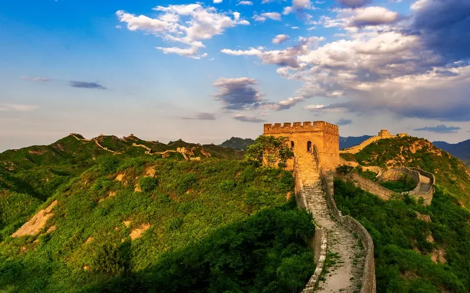

The Great Wall of China is one of the most iconic structures in the world. It is a series of fortifications made of stone, brick, tamped earth, wood, and other materials, generally built along an east-to-west line across the historical northern borders of China to protect the Chinese states and empires against the raids and invasions of the various nomadic groups of the Eurasian Steppe.
GeneralㅤInformation
GeneralㅤInformation
The Great Wall of China is the world's longest man-made structure, stretching over 5,500 miles from east to west. It is made up of several walls, watchtowers, and fortifications, and is estimated to have taken over 2,000 years to build. It is one of the most recognizable symbols of China and is a UNESCO World Heritage Site.

History
History
The Great Wall of China was first built in the 7th century BC by the Qin Dynasty, and was later expanded and maintained by the Ming Dynasty in the 14th century. It was built to protect the Chinese Empire from the nomadic tribes of the Eurasian Steppe, and was also used to control trade and immigration.

Build
Build
The Great Wall of China is made up of several walls, watchtowers, and fortifications. It is made of stone, brick, tamped earth, wood, and other materials. It is estimated to have taken over 2,000 years to build, and is one of the most impressive feats of engineering in the world.

FunㅤFacts
FunㅤFacts
- The Great Wall of China is visible from space, and is one of the few man-made structures that can be seen from the moon. It is also said to be the only man-made structure that can be seen from the moon with the naked eye.
- It is also said to be the longest cemetery in the world, as it is estimated that over 1 million people died during its construction.